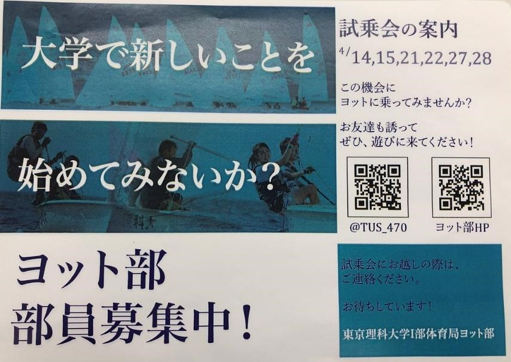
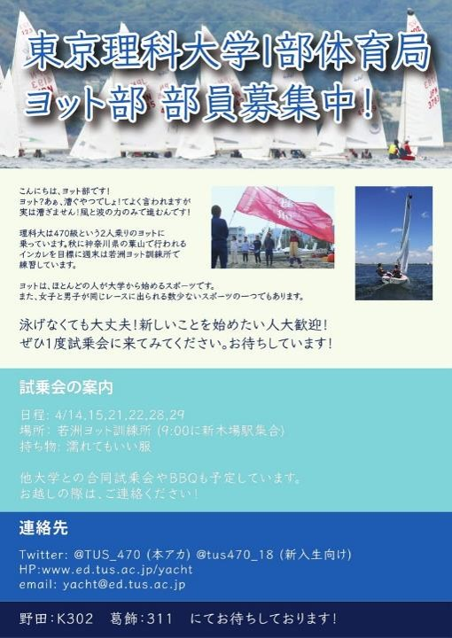

NEWS
HP更新 2018.10.20
今年度もインカレ終了しました 2018.10.10
新歓情報更新!! 2018.3.28
この度，20年近くお世話になっていた廣瀬さんの合宿所から引っ越しすることになりました。すばらしい環境を提供してくださりありがとうごいました。10月からは若洲ヨット訓練所で練習します。 2017.12.1
大会結果更新しました 2017.9.25
部員紹介更新しました 2017.9.3
HPのデザイン変えました 2017.4.9
部員情報更新しました。 2017.4.8
試乗会の予定作りました 2017.3.28
新歓ページ更新しました。 2017.2.25
年間予定表公開しました。 2017.2.1
ブログ更新してます。 2016.10.28
関東学連秋インカレは残念ながら欠場することとなりました。2016.9.17
ブログつくりました 2016.9.4
HPリニューアルしました。随時更新予定 2016.9.2
ABOUT US
東京理科大学Ⅰ部体育局ヨット部は約60年の歴史を持つ部活動です。全日本への出場経験もあり，OBには世界選手権に出場している人もいます。現在は東京都江東区にある若洲ヨット訓練所を拠点として毎週末活動しています。大きな大会は春と秋に毎年葉山でレースが行われます。
僕たちが乗っているヨットは一般にディンギーヨットと呼ばれ，帆船です。風の力だけで進みます。よくヨット部というと漕ぐやつでしょ?と言われますが，全く漕ぎません。
ヨットはオリンピック競技であり，最近は日本でも注目を浴びはじめています。世界的にはゴルフと同じように紳士のたしなみのひとつらしいです。 日本ではほとんどの人が大学からヨットを始め，卒業後もインストラクターや趣味として土日にセーリングを楽しんでいる人が多いです。
何かに夢中になれるのは大学生が最後かもしれません。高校生活で燃え尽きたと思っている人，新しいことを始めてみたい人，大学生遊んで終わりたくない人，熱中できることを探している人， 自然が好きな人ぜひ一緒にヨットに乗りましょう！お待ちしております。
RECRUIT
 
Q＆A
Q初心者だけど
大丈夫です。他大を含めほとんどの部員が大学入ってからヨットを始めた人たちです。
Q泳げないんだけど
なんとかなります。海に出るときは全員ライフジャケット（救命具） を着用するし，練習には必ずレスキュー艇 がそばにいるので安心して下さい。
Q練習日は？
主に週末です。 平日は何もなく自由に過ごせるので授業が忙しくても問題ないです！
Qお金かかりそう...
体育局に所属しているので大学からの助成金やOB会からの寄付金があるので大丈夫です。また船もすでに所有しているので初期費用はほとんどかかりません。自分が着るものくらいかな。
Q土曜日授業あるんだけど
日曜日だけ参加することも可能です。
Qバイトもしたい
もちろんしてください..平日は活動ないのでがっつりバイトできますよ。
Q2年生だから入りにくい？
そんなことはありません。基礎工生や2年から始める人もいますよ。
Q女性でも大丈夫？
問題ないです。女の子だけの大会もあります。女性セーラーってかっこいいですよね！
Qほかのサークルにも入れる？
はい。どんどんやってください！